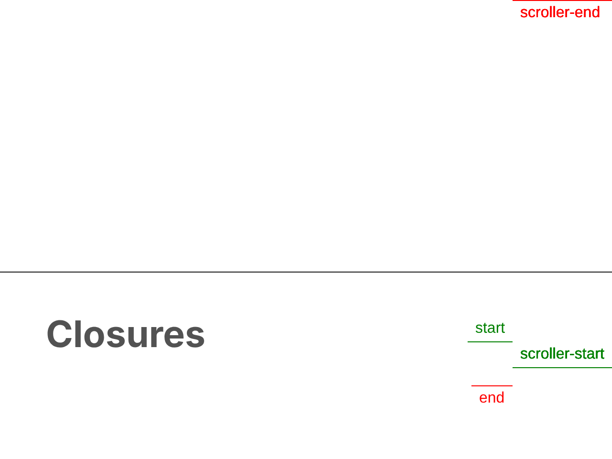
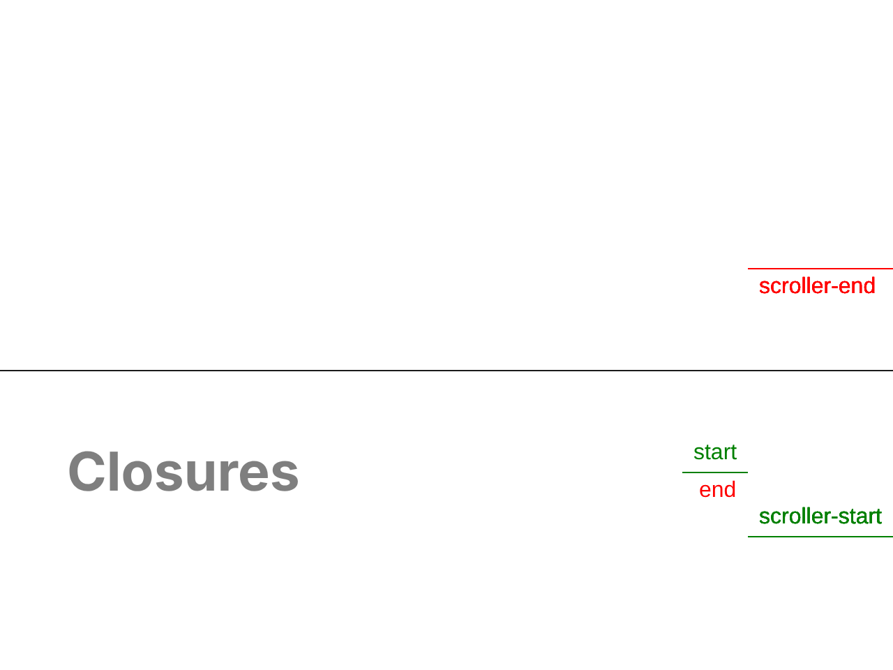
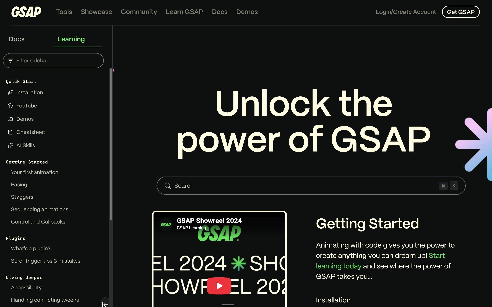

Last week, you put your skeleton page together, and hopefully now you've made a start on your Figma designs. Today we are going to make a start with GSAP and cover how to animate each beat as the reader arrives at it. After the break, we will look at how to swap held images on scroll. While you work, I will come round and look at your skeleton page and your Figma frames with you.
Before we start: you do not need a lot of animation to do well. A clear story, well paced, with a few changes that serve it, is a strong piece.
Today's code is ready to download
scrolltrigger-demos.zip
holds four working demos that cover everything we do today. Each
one is a folder laid out like your own project:
index.html, css/style.css and
js/main.js. Unzip it, open the folder in VS Code, and
copy what you need into your own main.js.
- Arrive: each heading waits for the reader.
- Scrub: the reader's scroll drives it.
-
Try the values: change
startandendand watch the markers move. - Held picture: Granby Street in Leicester, then and now. A swap, a stagger, a slide, and two changes in order.
Session at a glance
Break
Also on this page: If you get stuck · Resources
Part one
Intro to GSAP
GSAP is a free JavaScript library for animating anything on a web page. Its ScrollTrigger plugin ties that animation to the reader's scroll.
Open your skeleton page. Each beat has a heading in it: that is what we animate first.
What GSAP can do
In a story, it puts you in charge of timing. A photo fades in as the reader reaches it, a line draws as they scroll, a picture holds while the words move past. Your storyboard says what changes in each beat; GSAP makes it change.

Link GSAP to your page
Two script tags load GSAP and ScrollTrigger. They go above your own, so GSAP is ready before your code runs.
index.html, above your own script tag
<script src="https://cdn.jsdelivr.net/npm/gsap@3.15.0/dist/gsap.min.js"></script>
<script src="https://cdn.jsdelivr.net/npm/gsap@3.15.0/dist/ScrollTrigger.min.js"></script>
<script src="js/main.js"></script>
Reload, open the console and type gsap. If it says
gsap is not defined, check the two tags.
Switch on ScrollTrigger
One line, at the very top of main.js.
js/main.js
gsap.registerPlugin(ScrollTrigger);Make something move
js/main.js, under that line
gsap.from(".beat h2", {
opacity: 0,
y: 40, // starts 40px lower than its resting place
duration: 0.8, // seconds
ease: "power2.out" // arrives fast, settles gently
});
Reload. gsap.from() starts each heading from these values
and ends it wherever your CSS already puts it. If the script never
runs, the heading is simply there, so never set
opacity: 0 in your CSS.
Now scroll down. The other headings have already played, while no one was looking.
Wait for the reader
Give every heading its own trigger, so each one waits until the reader reaches it.
js/main.js, replacing the block above
gsap.utils.toArray(".beat h2").forEach(function (heading) {
gsap.from(heading, {
opacity: 0,
y: 40,
duration: 0.8,
ease: "power2.out",
scrollTrigger: {
trigger: heading,
start: "top 80%", // the heading's top meets 80% down the screen
markers: true // DELETE BEFORE YOU PUBLISH
}
});
});Why start has two values
start tells ScrollTrigger when to begin. To do that it
needs two pieces of information: which part of the heading to watch,
and how far up the screen that part has to travel. So it always takes
two values, in that order: first the heading, then the screen.
The first value, top, is a place on the
heading: its top edge. This point belongs to the heading, so
it moves.
The second value, 80%, is a place on the
screen: a line 80% of the way down from the top of the
browser window. It belongs to the screen, not the page, so it never
moves: the page scrolls past it. GSAP's scroller-start
line shows where it is.
The animation starts at the moment the first reaches the second: when
the top of the heading has scrolled up to 80% of the way down the
screen. With markers: true you can watch it happen. The
start marker rides up with the heading until it touches
the scroller-start line, which stays still. GSAP draws
both in green; in the diagram I have made the heading's marker blue
so you can tell them apart.
end works in exactly the same way, with red markers:
end: "top 40%" means "finish when the top of the heading
reaches 40% of the way down the screen". You will use it further down
this page.
| Value | First value: on the heading | Second value: on the screen |
|---|---|---|
top |
its top edge | the top of the screen |
center |
its middle | halfway down the screen |
bottom |
its bottom edge | the bottom of the screen |
80% |
80% of the way down the heading | 80% of the way down the screen |
So "center center" starts when the middle of the heading
reaches the middle of the screen, and "top bottom"
starts as soon as the top of the heading appears at the bottom of the
screen. "top bottom" is what GSAP uses if you leave
start out. GSAP spells center the American
way: centre will not work.
Now scroll your page and watch the markers.
See it working: I have made ScrollTrigger demos: arrive, scrub, and one where you change both values and watch the markers move. Download them and read the code in VS Code.
Let the reader drive it
That plays once. Add two lines and the scroll drives it instead: stop, and it stops; scroll back, and it goes back.
js/main.js, inside the scrollTrigger
start: "top 80%",
end: "top 40%", // the animation finishes here
scrub: true, // the scroll position drives it
start: "top 80%",
// no end, so GSAP uses "bottom top"start is on the heading's
top, scroller-start 80% down the screen. With no
end, the end marker is on the heading's
bottom and scroller-end at the top of the screen.
Once start passes scroller-start, the
heading plays to the end on its own.

start: "top 80%",
end: "top 40%",
scrub: true,top, so
start and end sit together on the
heading's top edge. scroller-end has moved up to
40%. The heading only moves while its top travels from 80% up to
40% of the screen.
Task 1 · 10 minutes · on your own project
Arrive, or follow the hand?
- Add
endandscrub. Scroll slowly, then back. - For each frame on your storyboard, decide which it needs. The bank story has no scrub at all.
-
Set
markers: false. Commit as first motion and sync.
Stuck? Demos 1 and 2 in the download do exactly this.
Learn GSAP in your own time
Class gets you started. The rest is practice: work through these between sessions.

-
ScrollTrigger demos
Arrive, scrub, try the values, and a held picture.
-
GSAP learning
Guides, videos and courses, all in one place.
-
Getting started
Your first animation, then easing, staggers and timelines.
-
ScrollTrigger
start,end,scrubandmarkers. -
ScrollTrigger tips and mistakes
When something does not fire where you expect.
-
GreenSock Learning
GSAP's own videos, including today's ScrollTrigger one.
-
GSAP Express
34 short video lessons on the basics. Free, but you sign up.
Break
Part two
Change the held picture, beat by beat
A held picture stays in place while its chapter's beats scroll past. Your CSS already does the holding. Now we make the picture change: at each beat, something in it appears, swaps or moves.
The rule is one trigger per beat. The beat is the trigger. The thing in the picture is what changes.
Stack the pictures
Everything the held picture will ever show goes inside it from the start. Give each thing you will animate an id.
index.html, chapter 1 of the bank story
<section class="chapter" id="chapter-1-the-corner">
<div class="held">
<img src="images/scene-01.svg" alt="The bar today.">
<img src="images/scene-02.svg" alt="The same corner in 1905." id="pic-1905">
</div>
<div class="beat" id="beat-01-today">…</div>
<div class="beat" id="beat-02-1905">…</div>
</section>Then put everything in a held picture in the same place, one on top of another. Later in the HTML means on top.
css/style.css, under YOUR STYLES
/* HELD PICTURE LAYERS: everything in it sits in the same place */
.held {
display: grid;
place-items: center;
}
.held > * {
grid-area: 1 / 1; /* row 1, column 1: all on top of each other */
position: relative; /* so later in the HTML is always on top */
}Your storyboard already wrote the code
Every frame on your storyboard has the same rows, and each row becomes a line of code. Here is beat 02 of the bank story.
Beat 02-1905Chapter 1 · the corner
Held picture: today, then 1905
- 1 Trigger
- Caption 2 reaches the dotted line.
- 2 Change
- 1905 photo fades in over today's.
- 3 How it moves
- Slow, even fade. About a second.
- 4 Reader can
- Scroll back to swap it back.
js/main.js
gsap.from("#pic-1905", { // 2 the 1905 photo
opacity: 0, // 2 fades in
duration: 1, // 3 about a second
ease: "none", // 3 even
scrollTrigger: {
trigger: "#beat-02-1905", // 1 caption 2
start: "top center", // 1 meets the line
toggleActions: "play none none reverse", // 4
markers: true // DELETE BEFORE YOU PUBLISH
}
});center.
It is gsap.from() again. The 1905 photo is on top in the
HTML, so GSAP hides it as the page loads and fades it in when beat 02
reaches the line.
Scroll back, and it goes back
toggleActions says what happens each time the reader
crosses the line. Two settings cover most stories.
| Setting | Scrolling down | Scrolling back up |
|---|---|---|
"play none none reverse" |
it plays | it undoes itself |
"play none none none" |
it plays | it stays as it is |
How it moves
Your storyboard's How it moves row, in GSAP. All of
these go inside gsap.from(), and you can use several at
once.
| Your storyboard says | In GSAP |
|---|---|
| Fades in | opacity: 0 |
| Rises into place | y: 40 |
| Drops into place | y: -40 |
| Slides in from the left | x: -300 |
| Slides in from the right | x: 300 |
| Grows from nothing | scale: 0 |
| Turns as it arrives | rotation: -90 |
| About a second | duration: 1 |
| Slow and even | ease: "none" |
| Quick, then settles | ease: "power2.out" |
| Overshoots, then settles | ease: "back.out(2)" |
Several things, one after another
When one beat brings in a row of things, give them all the same class
and add stagger: the gap, in seconds, between one
starting and the next.
js/main.js
gsap.from(".marker", {
opacity: 0,
scale: 0,
duration: 0.4,
stagger: 0.2, // each one 0.2 seconds after the last
ease: "back.out(2)",
scrollTrigger: {
trigger: "#beat-03-markers",
start: "top center",
toggleActions: "play none none reverse"
}
});See it working: demo 4, held picture. Two photos of Granby Street in Leicester, a century apart, held while five beats scroll past: a swap, a stagger, a slide, and two changes in order, with the code beside each beat. It is in the demos download too.
Task 2 · 40 minutes · on your own project
Change your held picture
-
Pick a chapter with a held picture. Put every picture it needs
inside
<div class="held">, and add the layers CSS. - Take the first beat where the picture changes. Copy the beat 02 block and change the numbered lines to what that frame says.
- Scroll down, then back up. Does it undo?
- Add a block for every other beat that changes the picture. Use the How it moves table.
-
Set
markers: false. Commit as held picture and sync.
Stuck? Demo 4 in the download does all of this: copy from it.
No held picture in your story? Do the same on any chapter. The beat is still the trigger; what changes can be anything in it.
Two changes in one beat, in order
A timeline plays its steps one after another, from one
trigger. Each .from() starts when the one before it
finishes. Beat 05 of demo 4 does this.
const tl = gsap.timeline({
scrollTrigger: {
trigger: "#beat-05-in-order",
start: "top center",
toggleActions: "play none none reverse"
}
});
tl.from("#pic-c", { opacity: 0, duration: 1 })
.from("#caption-c", { opacity: 0, y: 40 });Part three
Before you go
- first motion and held picture committed and synced.
- Figma: a frame for every beat, and a named version.
- Any AI use today is in your AI-use log.
Before the next session: in Figma, draw your interaction moment: what the reader clicks, and what they see after.
If you get stuck
Nothing moves
Red in the console? GSAP script tags above main.js?
Any .beat h2 on the page?
My held picture scrolls away
Is <div class="held"> the first thing in its
chapter? Does anything around it have
overflow: hidden? That switches sticky off.
I only ever see the last picture
Later in the HTML means on top. Every picture after the first needs
its own gsap.from() to hide it until its beat.
It changes in the wrong place
Turn the markers on. It changes when the beat's
start marker meets scroller-start. Move
start until that happens where your storyboard says.
Scrolling back up does not undo it
Add toggleActions: "play none none reverse".
Something else
Ask in the class, or email a.m.pearson@leedsbeckett.ac.uk.